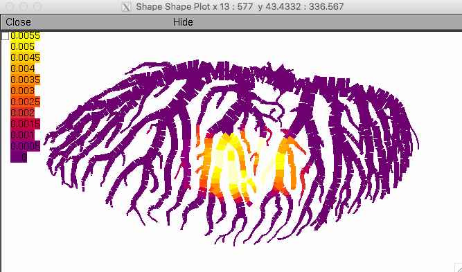
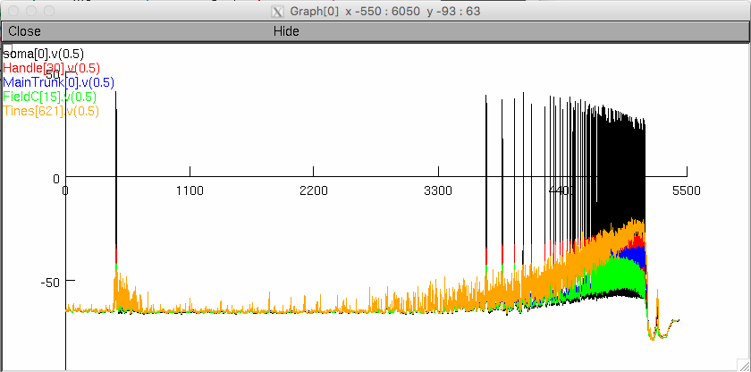
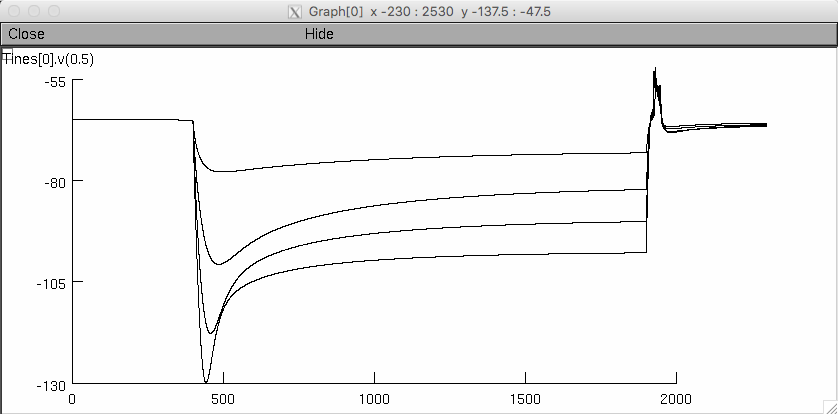

This is a model of the lobula giant movement detector neuron (LGMD) which is a well studied neuron within the optic lobe of grasshoppers. Improvements in detail have been made from previous models by creating accurate 3D morphology through reconstructions of 2-photon imaging stacks and insertion of active conductances throughout the neuron. Attached are a number of files which setup the channel and membrane properties of the LGMD model and provide several example simulations.
Auto-launch or Compile special:
The LGMD model uses several custom .mod files for channels and currents. The auto-launch link will use these mod files to compile a special executable version of NEURON with the additional membrane mechanisms. Alternatively, the mknrndll application or nrnivmodl binary can be used to compile the special version containg all custom channels. In unix/linux the command to compile the mod files is "nrnivmodl mod_files".
Setup of the model is done by "LGMD_setup.hoc". After executing the special nrn, run the setup script with the command - load_file("LGMD_setup.hoc"). If using the auto-launch this is done automatically. The LGMD_setup.hoc script imports the full 3D morphology ("LGMDreconstruction_NEURON.hoc"), loads the gui, multithread parallelization*, and many utility functions.
Once the model is loaded, there are several example simulations which can be run by loading the corresponding file. i.e. to simulate a looming stimulus use the command - load_file("standard_loom.hoc")
The dendritic field A show in Figure 1 A in the paper is displayed:  The simulation takes just under 10 minutes on a 2013 MacBook Pro and produces these voltage traces: ** Hyperpolarizing Sag **
current_steps.hoc
Simulates series of 4 hyperpolarizing current injections into field A (-2.5, -5, -7.5, and -10 nA). The 4 current steps are simulated in sequence and the membrane potential of the injected location (base of field A) is plotted with the 4 steps overlayed.
** Visual Stimuli **
standard_loom.hoc
100%_coherent_coarse.hoc
Loading any of these visual stimulus scripts will import the appropriate synapse files and run the simulation. The file names indicate the visual stimulus simualted (see article for description). Two plots are opened. One displaying the membrane potential at multiple locations within the neuron, and the other illustrating the calcium concentration within field A. Synaptic channels in field A pass calcium and there are no voltage-gated calcium channels in the dendrites so the calcium concentration is an indirect way to visualize the synaptic inputs.
** sEPSP Response **
sEPSP_series.hoc
Simulates series of 5 EPSC waveform injections with fixed delays of 5, 10, 15, and 20 ms. The 4 series are simulated in sequence and the membrane potential of the injected location (base of field A) is plotted.
** Drug application **
To simulate responses after channel bloackade through application of ZD7288 or 4AP, use the procedures "addZD7288()" or "add4AP()" before loading the desired simulation file. Conversely, this can be undone by the procedures "washZD7288()" and "wash4AP()" to return to the control conductance level.